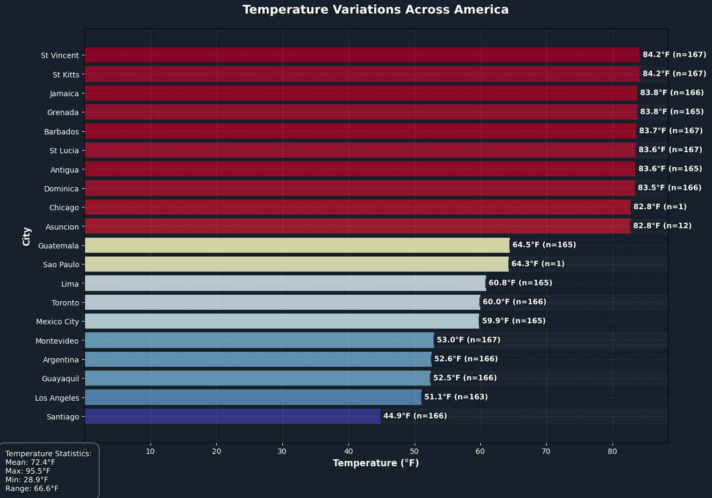
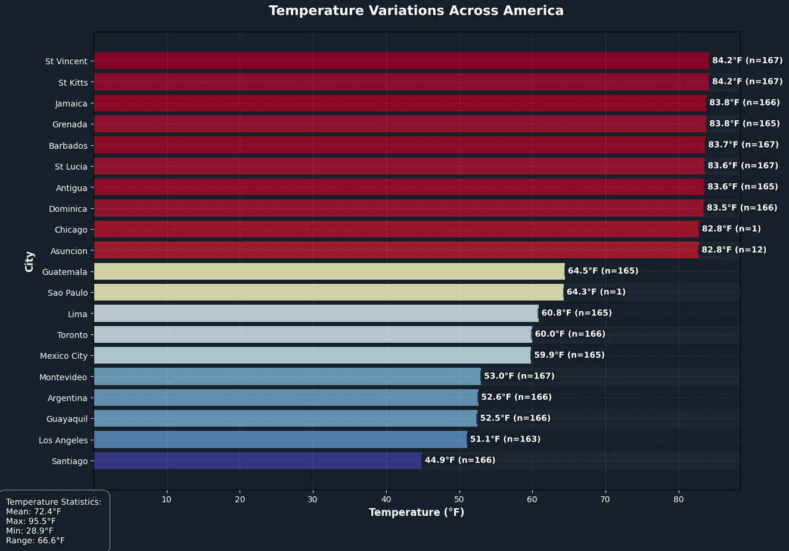
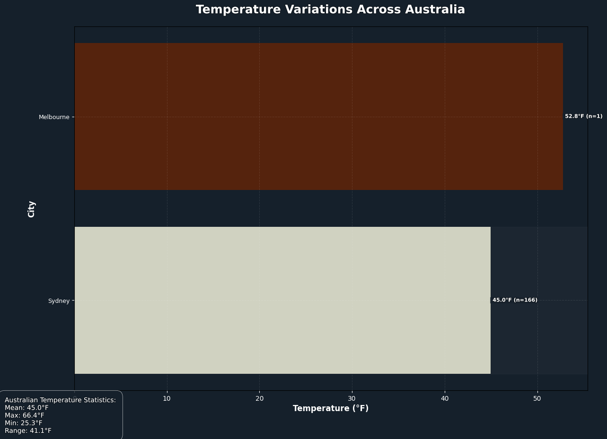
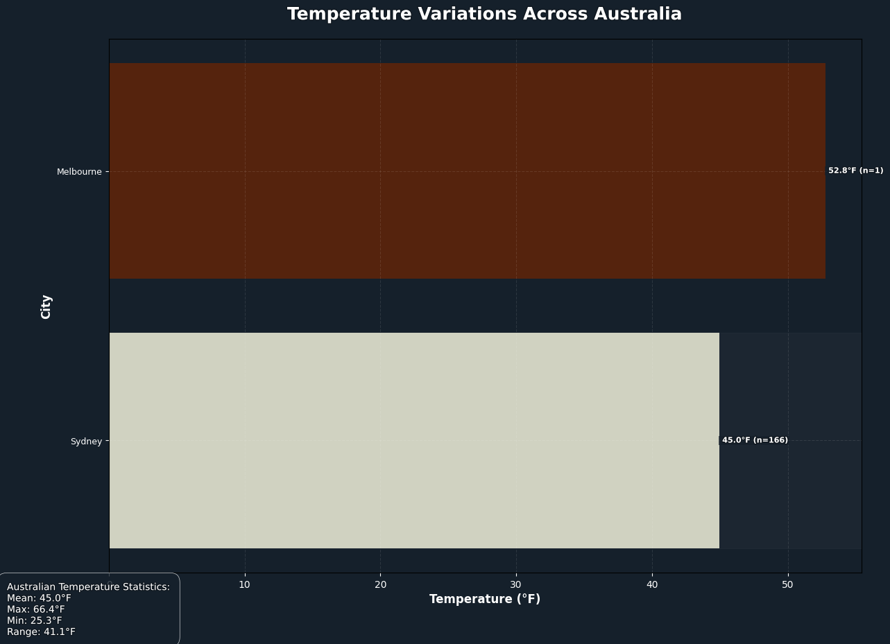

Global Temperature and Air Quality Analysis
Global Climate Overview
The comprehensive dataset reveals a complex picture of environmental conditions across five major world regions, highlighting significant variations in both air quality and temperature. Each continent presents a unique profile that reflects its geographical, industrial, and environmental characteristics.
Detailed Continental Analysis
Asian Cities


Asia emerges as the most extreme environment, with the highest mean temperature of 83.8°F and a substantial temperature range of 107.4°F spanning from 13.2°F to 120.6°F. This dramatic variation suggests Asia encompasses incredibly diverse climatic zones, from frigid mountain regions to scorching desert landscapes. While Asia's temperature variability is remarkable, its air quality is equally noteworthy, with a mean EPA index of 1.9 and a maximum of 6.0, indicating significant air pollution challenges.
African Cities
Africa follows closely with a mean temperature of 82.0°F, ranging from 38.2°F to 116.8°F across a 78.6°F span. Its air quality metrics are slightly lower than Asia's, with a mean EPA index of 1.4 and a maximum of 6.0. The continent's temperature and air quality data suggest a predominantly warm climate with substantial regional differences.
European Cities


Europe presents a more moderate profile, with a mean temperature of 73.4°F and a temperature range of 74.1°F (from 32.4°F to 106.5°F). Its air quality is notably better, with the lowest mean EPA index of 1.2 and a maximum of 5.0, potentially reflecting more stringent environmental regulations and advanced industrial practices.
American Cities
 

The Americas show similar characteristics to Europe, with a slightly cooler mean temperature of 72.4°F and a temperature range of 66.6°F (from 28.9°F to 95.5°F). The air quality metrics mirror those of Africa, with a mean EPA index of 1.4 and a maximum of 6.0, suggesting comparable environmental challenges.
Australian Cities
 

Australia stands out as the most temperate region, with the lowest mean temperature of 45.0°F and the smallest temperature range of 41.1°F (from 25.3°F to 66.4°F). Its air quality is the most pristine, with the lowest mean EPA index of 1.0 and a maximum of only 2.0. This data suggests Australia's less dense population, stricter environmental policies, and geographical isolation contribute to its superior air quality and more stable climate.
Global Insights
The global dataset underscores the importance of regional environmental monitoring and the need for targeted approaches to address air quality and climate challenges. While some regions like Asia face significant environmental pressures, others like Australia demonstrate the potential for maintaining high environmental standards.